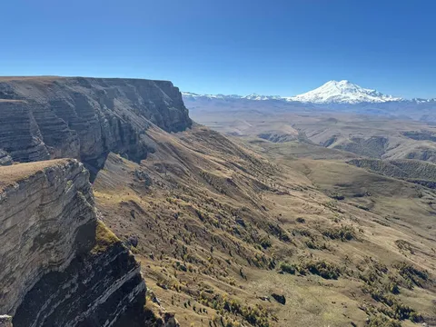
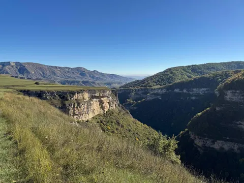
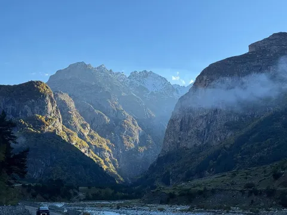
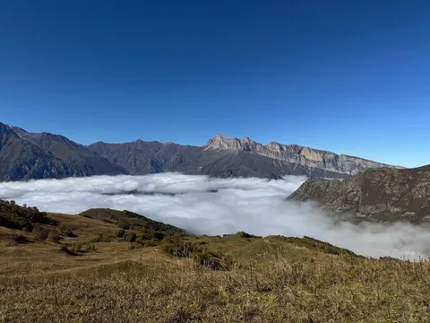
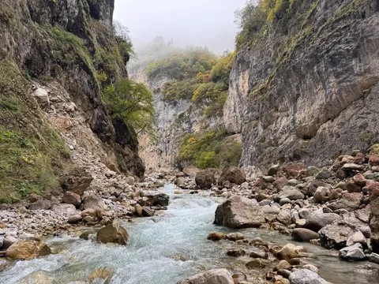
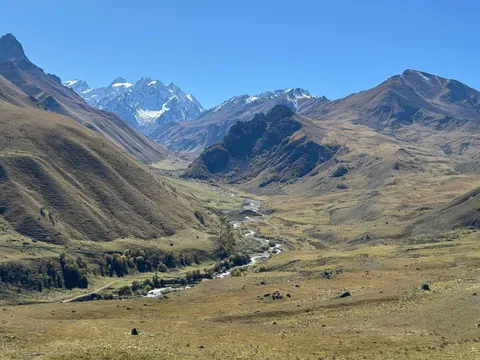
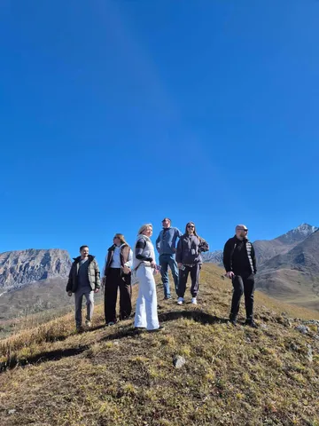
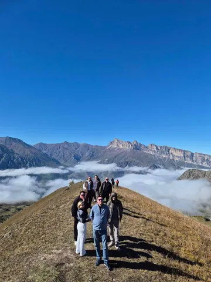

На прошлой неделе ездили с коллегами в Приэльбрусье. Однозначный лайк.
Кабардино-Балкария прекрасна. Потрясная природа, милейшие люди, вкусная еда. В целом лучше гор могут быть только горы, а любые горы - прекрасны. Кавказ очень доступен, и там есть все, что нужно - заснеженные вершины, живописные ущелья, масштабные плато, туманные долины. Максимальный рекомендасьон. Особенно плато Канжол.
Отдельный кайф - это ездить большой компанией в несколько машин. Шуточные обгоны, подколы по рации, обдавание друг друга грязью из-под колес - даже рядовой перегон можно превратить в приключение. Ну а традиция "бросить" в облаке пыли сломавшихся друзей в духе путешествий топ гира - вообще святое.
Ездили на почти стоковых nissan pathfinder на лифте и грязевой резине. Для той местности этого вполне достаточно. Зато независимая подвеска комфортней на перегонах, чем лютые мостовые монстры типа патрулей. Съезжая с асфальта травились в 1атм, и этого было достаточно, чтобы ехать по любой грязи вообще без проблем, даже несмотря на отсутствие блокировок. Более того, я полный привод то включил лишь раз, перед затяжным мокрым подъемом с поворотом. Пафик - отличный выбор, если не нужно преодолевать совсем уж жесть.
Самое сложное было - найти компанию организатора тура, кто пускает клиентов за руль (а мы хотели непременно сами преодолевать весь путь). Я написал в ~15 фирм. Никогда еще меня за утро не посылало столько человек. Спасибо ребятам из Южной Экспедиции, что поверили в нас (и, надеюсь, не пожалели) [не реклама, правда классные ребята. Талят, Аслан, Залим - вы крутые!] и провели по Приэльбрусью с максимальным кайфом. У них такой опыт тоже был впервые, и наши гиды сами недоумевали, что они могут не рулить, а торчать в окне с пивом и тоже получать удовольствие.
Ну и спасибо моим коллегам за прекрасную компанию, было супер душевно!
Ездите с друзьями и коллегами в путешествия, открывайте новое, наслаждайтесь красотой гор и сплачивайте коллектив, превозмогая вместе.
